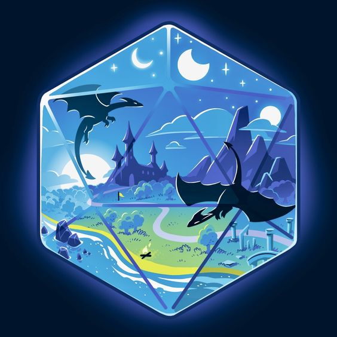

Добро пожаловать в мир Dungeons & Dragons
Dungeons & Dragons — это настольная ролевая игра, где игроки создают уникальных персонажей и отправляются в захватывающие приключения в фантастических мирах. Игра сочетает в себе элементы стратегии, творчества и совместного повествования, позволяя игрокам принимать решения, которые влияют на ход событий.
Существует множество миров и кампаний, в которых можно играть, каждая из которых полна уникальных существ, магии и приключений. От классических подземелий до сложных политических интриг — возможности безграничны!
Классы персонажей
Каждый игрок может выбрать класс для своего персонажа, который определяет его способности и навыки. Популярные классы включают:
- Варвар — могучий воин, способный наносить разрушительные удары.
- Маг — мастер заклинаний, способный управлять магией для атаки и защиты.
- Паладин — благородный воин, защищающий слабых и сражающийся со злом.
- Разбойник — ловкий и хитрый персонаж, специализирующийся на скрытности и ловкости.